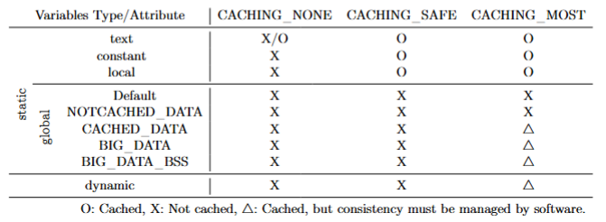

v2025-07-10 or later
RVX does not provide abstraction for hardware caches, so software-level consistency management is required in certain cases.
With a default caching policy, data consistency management is not required.
To enhance performance, users must explicitly assign variables to cacheable regions and manage their consistency manually.
Users should understand caching mechanisms and cache architectures from a computer architecture perspective.
It is necessary to understand how C code is executed at the hardware level.
If not well understood, it is advisable to rely on the default caching policy without attempting manual performance optimization.
The caching policy can be defined in the #(platform xml) file (refer to Figure 1).
CACHING_NONE
The CPU does not cache any data.
CACHING_SAFE
The CPU caches only data that does not require software-level consistency management.
CACHING_MOST
The CPU aggressively caches most data to enhance performance.
It is the user’s responsibility to manage data consistency in software.
Note: The caching region varies depending on the policy.
| CACHING_NONE | CACHING_SAFE | CACHING_MOST | ||
|---|---|---|---|---|
| Start | - | Variable | 0x00000000 |
|
| Last | - | Variable | 0xBFFFFFFF |

Figure 2 is the most accurate.
Static variables
This does not refer to variables declared with the static keyword.
Generally, these variables do not require consistency management, regardless of the caching policy.
If global variables are cached for performance optimization, appropriate attributes must be set (see Data Consistency Management).
If hardware IP reads a local variable via a pointer, consistency management becomes necessary—but such usage typically reflects poor coding practice.
Dynamic variables (allocated by malloc)
Under the CACHING_NONE and CACHING_SAFE policies, consistency management is not required.
If the CACHING_MOST policy is used, consistency management is required for dynamically allocated variables.
Consistency Management
Include the header file core_dependent.h.
Insert flush_cache() at your discretion.